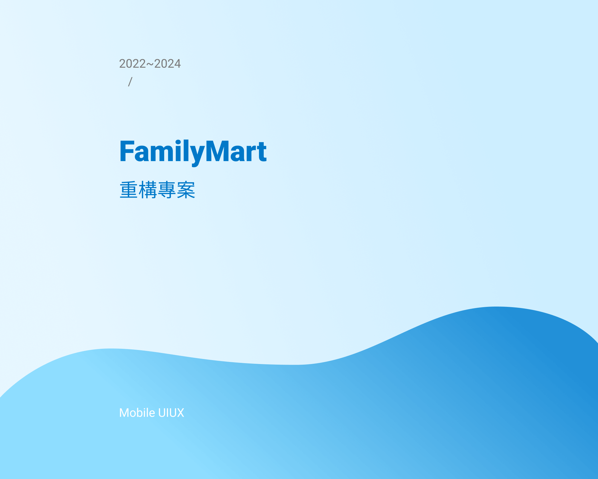

FEATURED WORKS

FamilyMart APP 改版重構專案
從APP整體策略面、現況痛點，到使用者分析、訪談，與6家廠商合作，歷時一年多討論、溝通與整合，期望能帶給消費者更好的用戶體驗，全新的FamilyMart APP，將於2024年上線，敬請期待。
FamilyMart 隨買共享功能優化
改善機制與流程，擴大使用人數
過去共享功能隱藏太深，加上流程有斷點，使用體驗不佳，以及能夠共享的商品種類少...等原因，使得共享功能不但被競業複製，使用人數極少且上線半年無法突破，因此商流單位提出需求，希望能改善此現況。
OPEN POINT APP
REDESIGN
整合APP資訊及簡化流程
優化整體視覺及顏色運用，重新定義Style Guide，統整集點、兌換、支付、紀錄...等資訊，簡化繁瑣的頁面流程，讓使用體驗上更流暢，解決消費者眼花撩亂，找不到資訊的問題，以及結帳時的效率。
ABOUT ME

嗨，我是如涵，我是一位UI/UX設計師
- 畢業於輔仁大學 應用美術學系 - 視覺傳達設計組
- 具有平面設計背景，網頁設計經驗3年，App設計經驗2年。
- 現任全家便利商店總公司UIUX設計師，負責全家App改版、發想商業模式、功能優化設計。
- 具管理、領導能力，在新成立的團隊中，從0開始導入設計思維，與內部團隊建立工作流程。
- 建立完善的設計系統，讓各外包廠商能夠遵循設計規範，保持整理APP一致性的設計。
- 負責團隊召募面試，帶新人熟悉工作流程、內容，協調團隊合作模式，並處理部門軟體預算等事務。
對新事物總是充滿好奇、喜歡嘗試，在Web & App 的設計領域，求新求變的環境下工作5年多，資訊和技術都更新的非常快速，是讓我對設計一直保持熱情的重要因素。